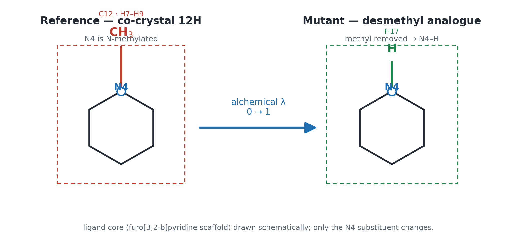
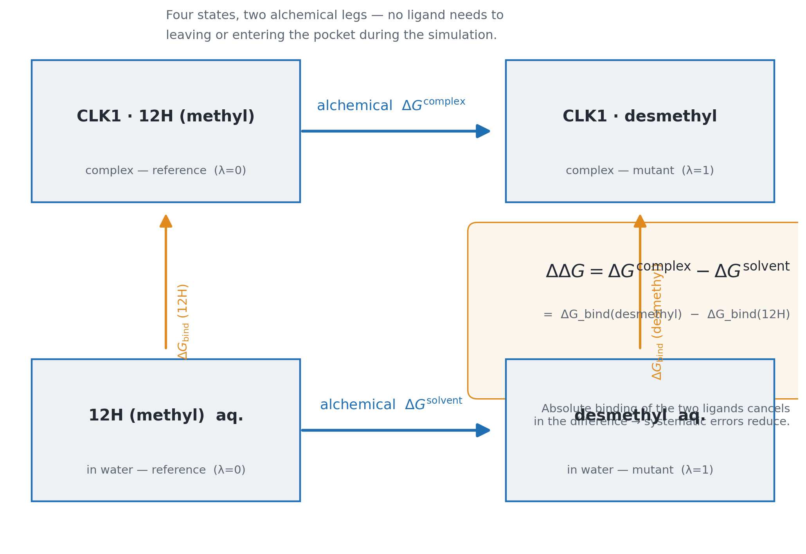
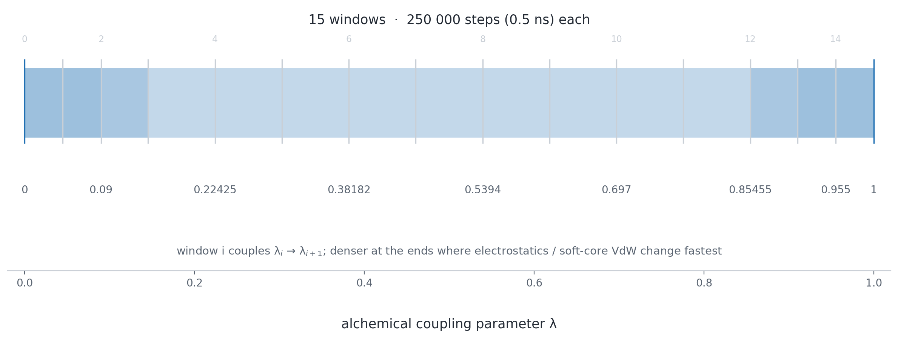
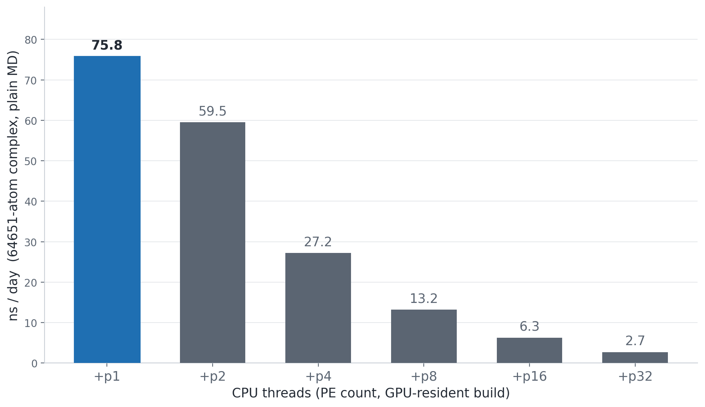
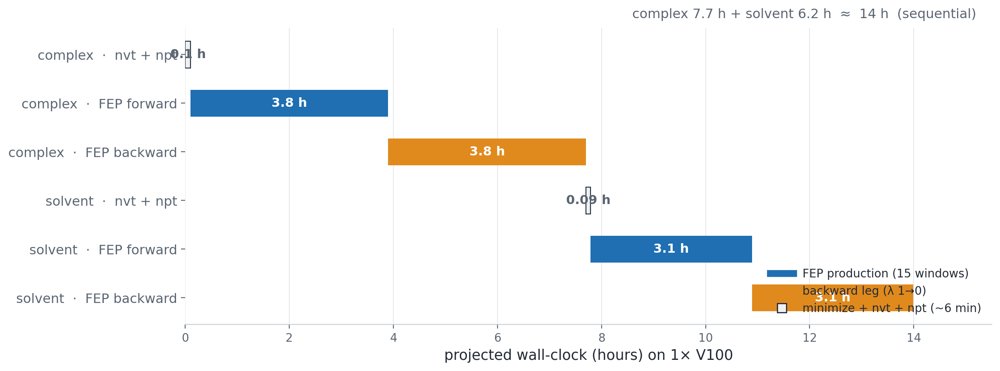

Dual-topology RBFE of the CLK1 inhibitor 12H (N–CH₃ → N–H desmethyl analogue), run end-to-end with NAMD 3.0.3 GPU-resident on a Tesla V100.
In this deck ① FEP theory & the thermodynamic cycle · ② the ligand modification on 6I5I/CLK1 · ③ preparation of the dual-topology system · ④ compiling NAMD for the GPU & the +p1 discovery · ⑤ protocol, runtime, analysis.
PDB 6I5I — crystal structure of human CLK1 in complex with a furo[3,2-b]pyridine compound 12H (ligand residue H3E).
Medicinal-chemistry question
We swap one substituent on the inhibitor and ask: does the analogue still bind, and by how much?
Concretely: replace the N-methyl of 12H by N–H (desmethyl analogue). Compute the change in binding free energy ΔΔGbind.
Reproduce the setup from repo 6I5I_DUAL_FEP/ —
no FEPrepare / Maestro / LigParGen required.


How to read it
Why FEP for RBFE

NAMD default: dual topology (singleTopology off)
| λ | methyl (C12H₃) | N–H (H17) | common core |
|---|---|---|---|
| 0 (reference) | interacting | dummy | interacting |
| 1 (mutant) | dummy | interacting | interacting |
Trade-offs
.fep B-factor column# ionized.fep — NAMD reads the tag via # alchFile ionized.fep · alchCol B # (the PDB B-factor column re-purposed # as an alchemical mask) HETATM ... UNL C12 ... -1.00 # VANISH methyl HETATM ... UNL N4 ... 0.00 # COMMON scaffold HETATM ... UNL H17 ... +1.00 # APPEAR N-H
Only the end-state substituents are tagged; protein, water, ions and the shared core are B = 0.
The encoding
ionized.pdb by a deterministic Python pass — no hand edits.Gotcha: both end-state atoms (methyl and N–H) must be present in the PSF at once — this is the essence of the dual topology.
prepare_hybrid.py
hybrid.rtf/prm.build_system.py · write_fep_inputs.py
ionized.fep; write fep.tcl (16 λ) and 8 .namd configs.Replaces the Feprepare web server, Maestro and LigParGen. numpy-only; no RDKit, no GUI.
| complex leg | solvent leg | |
|---|---|---|
| contents | CLK1 + hybrid ligand + TIP3P water + ions | hybrid ligand in TIP3P water |
| atoms | 64 651 | 5 013 |
| box (Å) | 89.2 × 85.4 × 90.6 | 35.9 × 38.2 × 40.2 |
| role | ΔGcomplex | ΔGsolvent |
ΔΔG = ΔGcomplex − ΔGsolvent — same force field, same windows in both legs.
Force-field stack
hybrid.rtf/prmpar_water_ions_clean.prmSampling — 300 K Langevin dynamics (NVT → NPT), well-equilibrated before the production windows begin.
./config Linux-x86_64-g++.gpuresident \ --charm-arch multicore-linux-x86_64 \ --with-single-node-cuda \ --cuda-prefix /usr/local/cuda-11.8 \ --cuda-gencode arch=compute_70,code=sm_70 make -j32
The one flag that matters
Plain --with-cuda silently disables GPU-resident integration.
Use --with-single-node-cuda — it defines NODEGROUP_FORCE_REGISTER and unlocks
the GPUresident path (gated in src/SimParameters.C).
Without it: FATAL: GPUresident not supported on regular multicore builds.
Build gotcha: prebuilt FFTW2 archives are not -fPIC → link fails on
Ubuntu 20.04 PIE. Rebuild FFTW 2.1.5 with -O3 -fPIC.

Counter-intuitive but reproducible — in GPU-resident mode
throughput is ~inversely proportional to the PE count. Run with +p1, not +p8.
+p8: 3.6 ns/day (plain) → GPU-resident +p1: 75.8 = ~21×| stage | what happens | steps | continues from |
|---|---|---|---|
| nvt | minimize 5k → Langevin NVT, 300 K, 0.1 ns | 55 000 | ionized.pdb |
| npt | Langevin-piston NPT (1 atm), 0.1 ns | 50 000 | nvt restart (.coor/.vel/.xsc) |
| fwd | alchemical FEP λ 0→1 | 15 × 250 000 | npt restart |
| bwd | alchemical FEP λ 1→0 | 15 × 250 000 | npt restart |
Each direction ≈ 7.5 ns of sampling (15 × 0.5 ns/window).
λ schedule (fep.tcl)
0 · .045 · .09 · .14546 · .22425 · .30303 · .38182 · .46061
.5394 · .61819 · .697 · .77576 · .85455 · .91 · .955 · 1
alchEquilSteps) and discarded from the BAR input..fepout written every 500 steps.
Complex ≈ 47 ns/day · solvent ≈ 59 ns/day (0.0037 / 0.0029 s·step⁻¹), GPU-resident +p1.
Why the solvent leg is not ~13× faster
On the original ~1.7 ns/day baseline this would have taken ~25–30 days.
The GPU-resident fix + +p1 rule is what makes daily FEP iteration feasible.
From .fepout to ΔΔG
md_forward / md_backward.fepout (both legs).Checks — forward vs backward agree (converged); ΔG smooth across λ; compare with experiment.
Extend — MBAR over the same windows; repeats for statistics; score a series of analogues with the same prep scripts.
Take-home. ① one local perturbation → two alchemical legs; ② dual-topology NAMD + a B-factor mask needs only scaffold + end-state atoms; ③ a GPU-resident build run with +p1 turned a ~30-day job into an overnight one — and more threads would have made it slower.